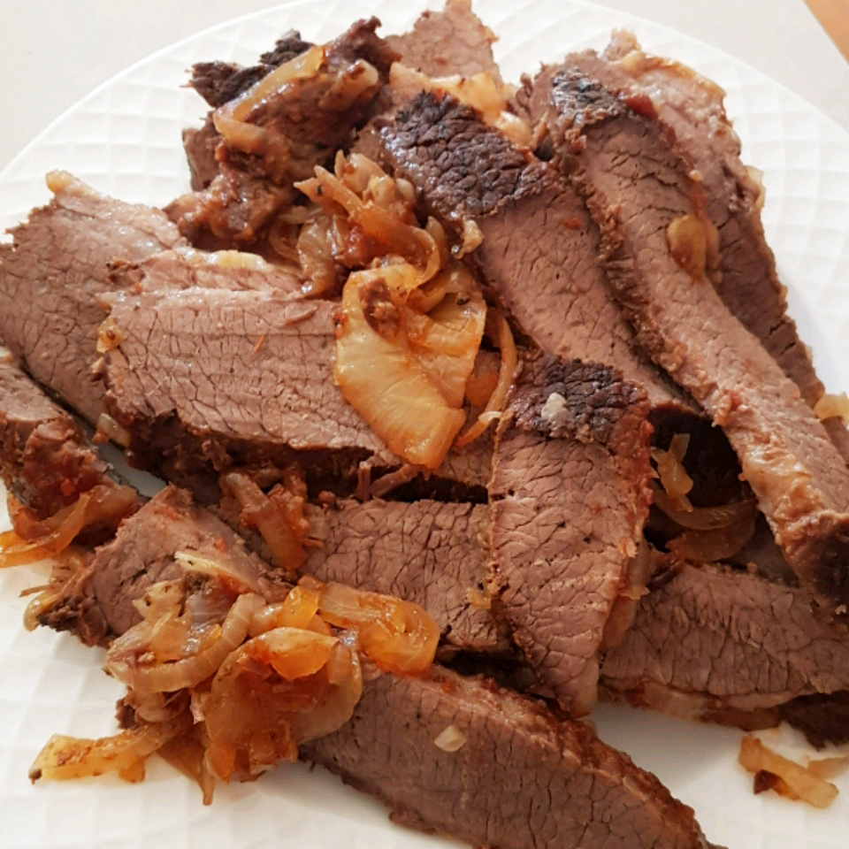

Simply the Easiest Beef Brisket

Description
Simply the best and easiest beef brisket there is. Great recipe to make
the day before and reheat to serve.
Ingredients
- 1 (3 pound) beef brisket, trimmed of fat
- 1 medium onion, thinly sliced
- salt and pepper to taste
- 1 (12 fluid ounce) can beer
- 1 (12 ounce) bottle tomato-based chili sauce
- ¾ cup packed brown sugar
Steps
- Preheat the oven to 325 degrees F (165 degrees C).
-
Season the brisket on all sides with salt and pepper, and place in a
glass baking dish. Cover with a layer of sliced onions. In a medium
bowl, mix together the beer, chili sauce, and brown sugar. Pour over the
roast. Cover the dish tightly with aluminum foil.
-
Bake for 3 hours in the preheated oven. Remove the aluminum foil, and
bake for an additional 30 minutes. Let the brisket rest and cool
slightly before slicing and returning to the dish. Reheat in the oven
with the sauce spooned over the sliced meat.
Back to Home